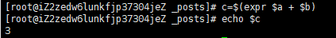

shell基础 -数值运算
首先先看一个例子

linux当中都是字符型、所以在运算的时候相当于是字符串相加。
declare [+/-] [选项] 变量名
很多Linux命令可参考https://www.linuxcool.com

这里我们所要使用的参数就是 -i 就可以完成运算

这是第一种运算方式。
expr运算

注意$a + $b 变量和+之间必须要有空格 不然会报错 这是第二种运算方式、可是这个用的很少。
所以就有更简单的
看如下命令


这两种是我们最常用的 我最喜欢使用第二种。